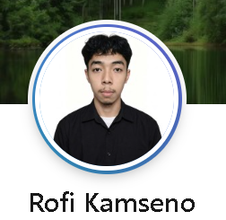
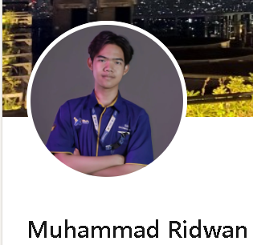

Dua Pikiran. Satu Standar Presisi.
Mengenal duo engineer & desainer di balik SIGMA Studio yang memadukan keindahan visual avant-garde dengan rekayasa antarmuka web performa tinggi.
Profil Tim Kami
Sinergi multidisiplin dalam arsitektur kode dan estetika antarmuka.

Rofi
Peran: Web Developer & UI Designer
Bertanggung jawab dalam merancang struktur kode HTML serta memastikan tampilan antarmuka web tetap bersih dan nyaman dilihat pengguna.

Ridwan
Peran: Technical Specialist
Fokus pada penyusunan logika konten, optimalisasi elemen halaman, serta mendukung pengintegrasian fitur-fitur website secara keseluruhan.
Jadwal Operasional Tim
Waktu aktif pelayanan konsultasi desain dan pengembangan web SIGMA Studio.
|
Hari Kerja
|
Jam Pelayanan
|
Status Operasional |
|---|---|---|
|
01
Senin - Jumat
|
08.00 - 17.00 WIB | Pelayanan Penuh |
|
02
Sabtu
|
09.00 - 14.00 WIB | Review & Evaluasi |
|
03
Minggu
|
Libur (On-Call Darurat) | Tutup |
Siap Merancang Produk Digital Berikutnya?
Diskusikan kebutuhan ide, arsitektur antarmuka, dan estimasi waktu bersama tim kami hari ini.